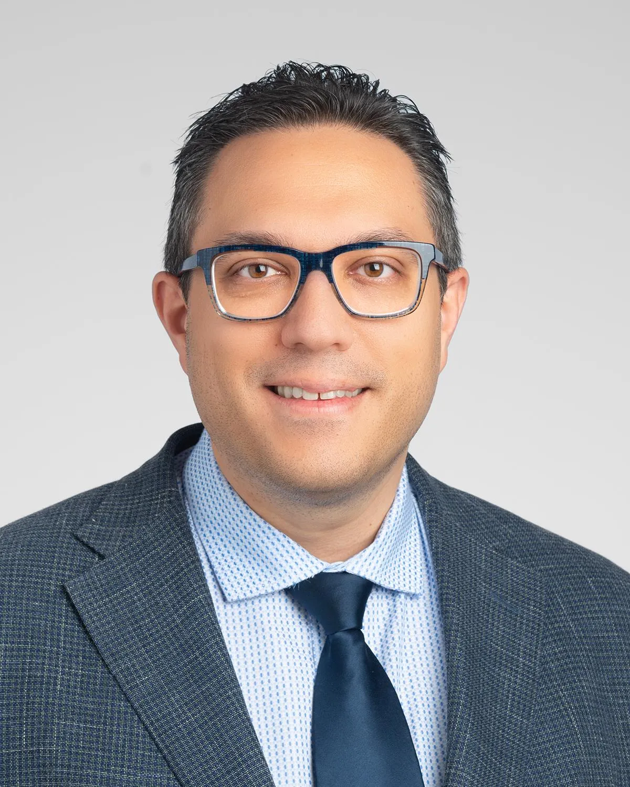
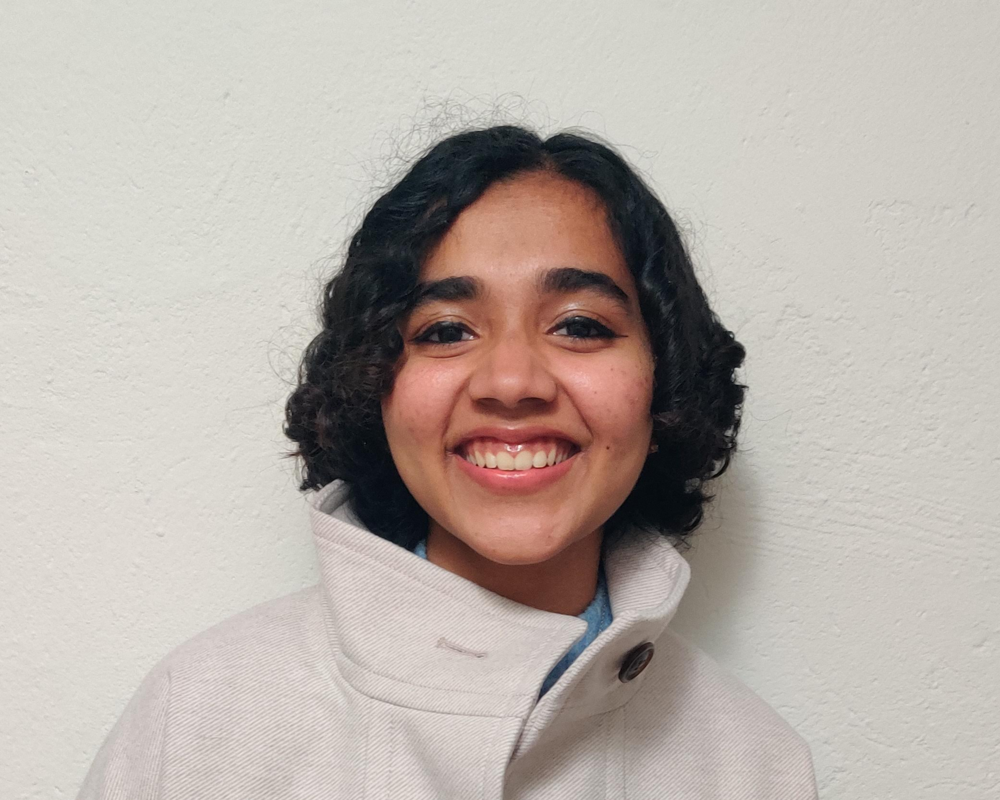

Meet the researchers driving innovation in the brAIn dynectome lab!

Principal Investigator
Dr. Demitre Serletis, MD, PhD, is an epilepsy neurosurgeon-scientist in the Charles Shor Epilepsy Center, within the Neurological Institute at the Cleveland Clinic. He is a graduate of the University of Toronto, where he completed his Neurosurgery residency and PhD in Neuroengineering.
Postdoctoral Researcher
Dr. M Rabiul Islam is a biosignal informatics post-doc researcher at the Cleveland Clinic, where he develops AI-driven methods to analyze complex brain signals and localize epileptic networks. His work integrates signal processing, machine learning, and neuroscience to advance precision medicine in neurology.

Senior Research Engineer
Neha Sara John is a Senior Research Engineer in the Cleveland Clinic's Epilepsy Center. She is a Biomedical Engeineering M.S graduate from the University of Michigan and defended her thesis under the supervision of Dr. William Stacey. She specializes in electrophysiology data analysis pipelines with a focus on multifractal and aperiodic analyses.